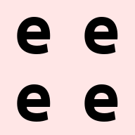

einops tutorial
Part-1
Welcome to einops
- We don't write
1y = x.transpose(0,2,3,1) - We write comprehensible code
1y = einops.rearrange(x, "b c h w -> b h w c") einopssupports widely used tensor packages viz.numpy,pytorch,tensorflow,chainer,gluonand extends them.
What's in this tutorial?
- Fundamentals: reordering, composition, and decomposition of tensors.
- Operations:
rearrange,reduce,repeat - How much can you do with a single operation?
Preparations
1 2 3 | |
Load a batch of images
1 2 3 4 5 | |
1 2 | |

1 | |

We will use three opeartions: rearrange, reduce, repeat
1 | |
Meet "rearrange"
rearrange
As its name suggests; it rearranges elements. Below, we swap height and width.
In other words, below we transpose first two axes/dimensions.
1 | |

Composition of axes
Transposition is very common and useful; but let's move to other
operations provided by einops
composition using rearrange() : height
einops allows seamlessly composing batch and height to a new height dimension.
Below we just rendered all images in the 4D tensor by collapsing it to a 3D tensor.
1 | |

composition using rearrange(): width
einops allows seamlessly composing batch and width to a new width dimension.
Below we just rendered all images in the 4D tensor by collapsing it to a 3D tensor.
1 | |

Resulting dimensions are computed very simply. Length of any newly computed axes/dimension is a product of its components
1 2 3 | |
1 | |
We can compose more than 2 axes/dimensions. Let's flatten the whole 4D array into a 1D array. The resulting 1D array contains as many elements as the original 4D array.
1 2 3 | |
1 | |
Decomposition of axes
Decomposition is the inverse process of composition.
It represents an existing axis as a combination of new axes.
Several decompositions are possible. Some examples are shown below:
Combining composition and decomposition
Combining composition & decomposition
1 2 3 4 | |
1 | |
An example
Combining composition & decomposition
1 2 3 4 5 6 | |

Another combination
Combining composition & decomposition
1 2 3 4 5 6 | |

Another example: width_to_height
Move part of the width dimension to height
We should call this width_to_height as the image width shrunk by 2 and height incresed by 2.
But all pixels are same!!!
1 2 3 4 | |
Another example: heigh_to_width
Move part of the height dimension to width
We should call this height_to_width as the image height shrunk by 2 and width incresed by 2.
But all pixels are same!!!
1 2 3 | |
Order of axes matter
The order of axes in composition and decomposition is of prime importance. It affects the way data is being transposed. Below examples show the impacts.
An example
1 2 3 | |

v/s
1 2 3 | |

Though the shapes of both a and b are same but the ordering of pixels are different.
RULE: The rule of importance is just as for digits.
The leftmost digit is most significant.
Neighboring number differ in rightmost axis.
What will happen if b1 and b2 are reordered before composing to width
(as shown in examples below):
1 2 | |

Meet "reduce"
In einops we don't need to guess what happened (like below)
1 | |
1 2 3 | |
Average over batch
Average over batch
1 2 3 | |

The above code is similar to the standard code (without einops) as shown below
1 2 3 | |

But, the code with einops is much more readable and states the operations clearly.
Reducing over multiple axes
Example of reducing over several dimensions.
Besides "mean", there are also "min", "max", "sum", "prod"
1 2 3 | |

Mean-pooling
Mean pooling with 2x2 kernel
Image is split into 2x2 patch and each path is avergaed
1 2 3 | |
Max-pooling
max-pooling with 2x2 kernel
Image is split into 2x2 patch and each patch is max-pooled
1 2 3 | |

yet another example
1 2 3 | |
Stack & Concatenate
1 2 3 4 5 6 7 | |
1 2 3 4 5 6 7 8 | |
1 2 3 4 5 6 7 8 | |
Addition and removal of axes
You can write 1 to create new axis of length 1.
There is also a synonym () that does exactly the same
It is exactly what numpy.exapand_axis() and torch.unsqueeze() does.
1 2 3 4 5 6 | |
The numpy.squeeze() operation is also facilitated by rearrange() as usual.
1 2 3 4 | |
An example usage
Compute max in each image individually and then show a difference
1 2 3 4 | |

Meet "repeat": Repeating elements
This is the third operation in einops library
 Repeat along a new axis. The new axis can be placed anywhere.
Repeat along a new axis. The new axis can be placed anywhere.
1 2 3 4 5 6 7 | |
Repat along an existing axis
1 2 3 | |

Repeat along multiple existing axes
1 2 | |

Order of axes matter as usual. You can repeat each pixel 3 times by changing the order of axes in repeat
1 2 3 | |
 NOTE: The
NOTE: The repeat operation covers numpy.tile, numpy.repeat and much more.
reduce v/s repeat
reduce and repeat are opposite of each other.
reduce: reduces amount of elementsrepeat: increases the number of elements.
An example of reduce v/s repeat
In this example each image is repeated first then reduced over the new_axis
to get back the original tensor.
1 2 3 4 5 6 7 | |
reduce and repeat are reverse of each other.
i.e.
in repeat its "b h w c -> b h new_axis w c" but
in reduce its "b h new_axis w c -> b h w c"
Some more examples
Interwaving pixels of different pictures
All letters can be observed in the final image
1 2 | |
Interweaving along vertical for couple of images
1 2 | |
Interweaving lines for couple of images
1 2 | |

Decomposing color into different axes
Here we decompose color dimension into different axes. We also downsample the image.
1 2 | |
Disproportionate resize
1 2 | |

Split & Reduce
Split each image into two halves and compute the mean of the two halves.
1 2 | |
Split and Transpose
Split into small patches and transpose each patch.
1 2 3 4 | |
Another Split & Transpose
This is crazy
1 2 3 4 | |
Yet another Split & Transpose
This is crazy crazy....
1 2 3 4 | |

Arbitrarily Complicated Pattern
1 2 3 4 | |

Subtract background & Normalize
Subtract background in each image individually and normalize.
NOTE: Pay attention to () -- this is a composition of 0 axis
(a dummy axis with 1 element)
1 2 3 4 5 6 | |
PIXELATE
First downscale by averaging then upscale by using the same pattern.
1 2 3 4 5 6 7 8 | |
ROTATE
1 2 | |

Another Example
Let's bring the channel dimension as part of the width axis.
Also, at the same time downsample the width axis by 2x
1 2 3 4 | |